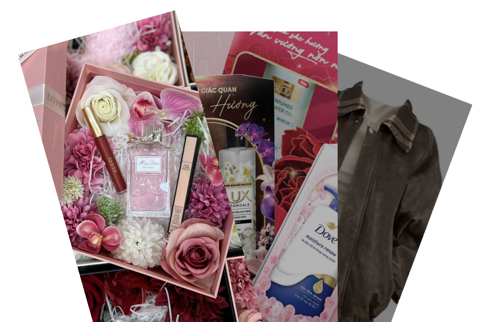

QUÀ TẶNG THIẾT THỰC NHÂN NGÀY PHỤ NỮ VIỆT NAM 20/10
Ngày Phụ nữ Việt Nam 20/10 là dịp tuyệt vời để thể hiện tình cảm với
những người phụ nữ quan trọng trong đời như mẹ, vợ, người yêu hay em
gái. Nếu bạn đang băn khoăn chưa biết chọn món quà nào cho ý nghĩa,
hãy tham khảo một vài gợi ý thiết thực dưới đây:
- Nước hoa: Luôn là sản phẩm yêu thích của hội chị em, đây là một món
quà tinh tế và vô cùng thiết thực.
- Sữa tắm: Một lựa chọn chăm sóc cá nhân không thể thiếu, thể hiện sự
quan tâm tinh tế đến thói quen hàng ngày.
- Quần áo, túi xách: Những món đồ thời trang giúp phái đẹp tự tin thể
hiện phong cách và cá tính riêng.

<- TRỞ VỀ